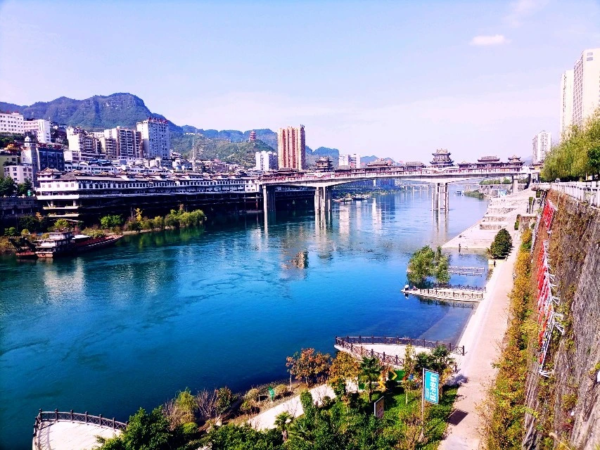

Welcome to Yanhe Tujia Autonomous County!

City Information
- Nation: People's Republic of China
- Province: GuiZhou
- Population (2019): 690,000
- Mother tongue ( dialect ): Southwest Mandarin , Yanhe Dialect
- Time zone: Beijing time ( UTC+8 )
Yanhe Tujia Autonomous County , also known as the Hometown of Chinese Tujia Folk Songs, is an autonomous county under the jurisdiction of Tongren City , Guizhou Province , China. It is located in the northeast of Guizhou Province and the north of Tongren City.
The surrounding area along the river is adjacent to Neidejiang, Yinjiang , Sinan , Chongqing Youyang and Xiushan counties in Guizhou Province. It has jurisdiction over 4 sub- districts , 17 towns and 2 townships.
Tourist attractions
- Wujiang Mountain Gorge Scenic Spot along the River
- Mayang River Black Langur Reserve
- Eastern Guizhou Revolutionary Base
- The former site of the Revolutionary Committee of Eastern Guizhou Special Zone
- Nanzhuang Scenic Area
Last Updated
ran00005@algonquinlive.com